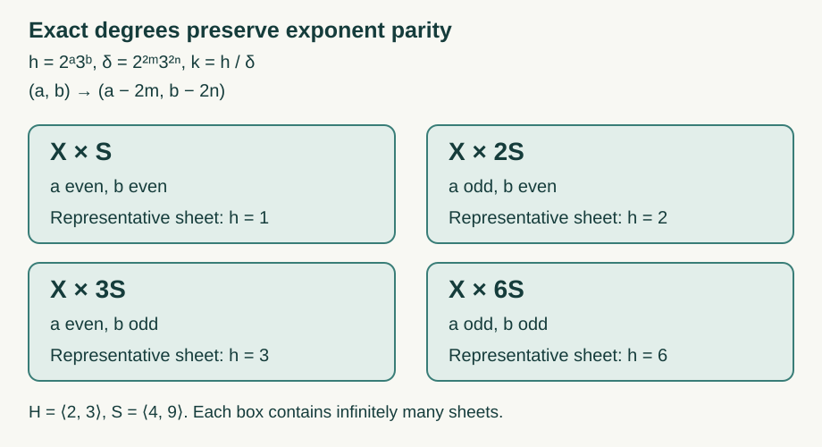

Ratio products and cyclic groupoid reductions
Taking a product and taking an exact cocycle level use different kinds of information. Products retain the real ratio sets of their factors. A cyclic inverse image, however, depends on which cocycle values occur exactly. This distinction gives a direct proof of the irrational product theorem and a precise criterion for the types of cyclic subrelations.
We use countable standard Borel principal measured groupoids, identified with countable Borel equivalence relations \(R\). Their quasi-invariant measures are nonzero and sigma-finite. Countable partial-graph presentations and null saturation are proved in 2. Countable presentations and null saturation. The modulus convention is
\[ \mu(TD)=\int_D\delta_\mu(Tx,x)\,d\mu(x), \tag{RPR.1} \]as in 1. Counting arrows and fixing the derivative. We work on invariant conull sets on which the cocycle identities hold simultaneously. A partial orbit bijection of constant derivative \(h\) has degree \(h\).
1. Real ratio sets and equivalent measures
A number \(r\in[0,\infty)\) is in the ratio set \(r(R,\mu)\) if for every positive measurable \(A\) and every neighborhood \(V\) of \(r\) in \([0,\infty)\), there is a positive-domain partial orbit bijection \(T:D\to T(D)\), with
\[ D,T(D)\subset A,\qquad \delta_\mu(Tx,x)\in V. \tag{RPR.2} \]The derivative remains positive; an assertion at \(r=0\) means that arbitrarily small positive derivatives occur. The identity shows that \(1\) belongs to the ratio set.
By the countable graph presentation, a derivative neighborhood has positive arrow-counting measure on a reduction precisely when some partial graph has a positive domain there. Thus this definition equals the intersection of reduced essential ranges used in Ratio sets and intrinsic modular spectra, Theorem 3.1 and Corollary 4.1. That earlier proof identifies the ratio set with the relation factor's intrinsic modular spectrum. In particular, the sets \(\{0\}\cup\lambda^{\mathbb Z}\) and \([0,\infty)\) give types \(\mathrm{III}_\lambda\) and \(\mathrm{III}_1\), respectively.
Lemma 1.1. The ratio set is closed in \([0,\infty)\), and its positive part is a multiplicative subgroup of \(\mathbb R_+^\times\).
Proof. If \(r\) is a limit of ratio values, every neighborhood of \(r\) contains a neighborhood of one of those values. This proves closedness directly from (RPR.2). If \(r>0\) is a ratio value, choose its derivative neighborhood so that inversion lands in a prescribed neighborhood of \(r^{-1}\), and invert the witnessing map. Its range is positive by nonsingularity.
For positive ratio values \(r,s\), choose neighborhoods \(U,V\) whose products lie in a prescribed neighborhood of \(rs\). Inside a positive \(A\), first choose \(T:D\to E\) with derivative in \(U\). Then choose \(Q:F\to Q(F)\) inside \(E\) with derivative in \(V\). Restrict \(T\) to \(T^{-1}(F)\). This domain is positive, the composite \(QT\) has both endpoints in \(A\), and its derivative is the product of the two derivatives. Thus \(rs\) is a ratio value. \(\square\)
Lemma 1.2. Equivalent sigma-finite measures have the same ratio set.
Proof. Write \(d\nu=f\,d\mu\), where \(0<f<\infty\) almost everywhere. Applying change of variables in (RPR.1) gives
\[ \delta_\nu(y,x)=\frac{f(y)}{f(x)}\delta_\mu(y,x). \tag{RPR.3} \]Given positive \(A\) and \(\eta>0\), one of the countably many bands
\[ B=A\cap\{e^{j\eta}\le f<e^{(j+1)\eta}\}, \qquad j\in\mathbb Z, \tag{RPR.4} \]is positive. For maps inside \(B\), the extra factor in (RPR.3) lies between \(e^{-\eta}\) and \(e^\eta\). For a positive ratio value of \(\mu\), choose \(\eta\) and then the \(\mu\)-derivative neighborhood small enough that their products lie in the prescribed \(\nu\)-neighborhood. This gives (RPR.2) for \(\nu\). At zero, first choose any \(\eta>0\) and then require the \(\mu\)-derivative to be below \(e^{-\eta}\varepsilon\). Interchanging the two measures proves equality. \(\square\)
An equivalent probability can always be chosen. Partition a sigma-finite space into sets \(E_n\) of finite measure and use a positive density bounded on \(E_n\) by \(2^{-n}/(1+\mu(E_n))\), then normalize its finite positive integral. We may therefore prove the following results for probabilities.
If an ergodic relation on a standard space has an atom, it is concentrated on a countable orbit. Indeed, nonsingularity sends an atom to an atom under every partial graph, so the countable saturation of an atomic point is positive and invariant, hence conull. A measure atom is concentrated at a point: a countable separating family, successively intersected with the side carrying its full mass, leaves at most one point. The counting measure on the resulting orbit is equivalent to the given measure and invariant. A singleton test set makes its ratio set exactly \(\{1\}\). Thus an ergodic relation whose ratio set contains a number other than \(1\) is nonatomic.
2. Product derivatives, ergodicity and finite approximation
Let \(R_i\) act on \((X_i,\mu_i)\), for \(i=1,2\), with probability measures as above. Their product relates \((y_1,y_2)\) to \((x_1,x_2)\) exactly when \((y_i,x_i)\in R_i\) for both \(i\).
Proposition 2.1. The product is a countable nonsingular Borel relation and
\[ \delta_{\mu_1\otimes\mu_2} ((y_1,y_2),(x_1,x_2)) =\delta_{\mu_1}(y_1,x_1)\delta_{\mu_2}(y_2,x_2). \tag{RPR.5} \]If both factors are ergodic, so is the product. If both are hyperfinite, so is the product.
Proof. Products of the countable partial graphs present the product relation. Fubini's theorem and change of variables on each graph give (RPR.5), first on measurable rectangles and then on all nonnegative measurable functions by simple-function approximation and monotone convergence. The derivatives are finite and positive almost everywhere, proving nonsingularity.
Let \(A\) be invariant for the product relation. By Fubini and the countable graph presentation, almost every section \(A_z=\{x:(x,z)\in A\}\) is invariant for \(R_1\). Ergodicity of \(R_1\) gives \(\mu_1(A_z)\in\{0,1\}\). Set \(B=\{z:\mu_1(A_z)=1\}\); this is measurable, and \(A\) agrees with \(X_1\times B\) modulo a product null set. Invariance under the second factor and nonsingularity imply that \(B\) is \(R_2\)-invariant modulo null sets. Hence its measure, and therefore the measure of \(A\), is zero or one.
If \(F_{i,n}\uparrow R_i\) are finite Borel subrelations, then \(F_{1,n}\times F_{2,n}\) have finite classes, increase, and exhaust the product arrows. The countably many null exceptions may be removed with their saturations. This proves hyperfiniteness. \(\square\)
Here hyperfinite means increasing finite-relation exhaustion. The equivalence with the source's AF convention, which permits constant finite class size on each stage's unit space, is proved in 1. What finite approximation means and 4. The dyadic criterion and the whole measured model, including the atomic alternatives. The product conclusion therefore also holds at that AF scope.
3. The full irrational product theorem
Theorem 3.1 (fiberwise ratio inclusion). Each factor's ratio set is contained in the ratio set of the product:
\[ r(R_1,\mu_1)\cup r(R_2,\mu_2) \subset r(R_1\times R_2,\mu_1\otimes\mu_2). \tag{RPR.6} \]Ergodicity and hyperfiniteness are not needed for this inclusion.
Proof. Fix \(r\in r(R_1,\mu_1)\), a positive measurable \(A\subset X_1\times X_2\), and a neighborhood \(V\) of \(r\). Enumerate a partial-graph presentation \(\theta_j\) of \(R_1\). Put
\[ D_j=\{(x,z)\in A: x\in\operatorname{dom}\theta_j,\quad (\theta_jx,z)\in A,\quad \delta_{\mu_1}(\theta_jx,x)\in V\}. \tag{RPR.7} \]For every positive section \(A_z\), (RPR.2) gives a positive-domain partial map inside it. Intersecting that map with the countable graph presentation shows that at least one of the sections \((D_j)_z\) has positive measure. The set of \(z\) with \(\mu_1(A_z)>0\) has positive \(\mu_2\)-measure. Consequently
\[ \int_{X_2}\mu_1\!\left(\bigcup_j(D_j)_z\right)\,d\mu_2(z)>0. \tag{RPR.8} \]By countable subadditivity, some \(D_j\) has positive product measure. On that domain, \((x,z)\mapsto(\theta_jx,z)\) is a partial orbit bijection inside \(A\), with derivative in \(V\) by (RPR.5). This proves the first inclusion. Interchange the factors for the second. The argument also applies to neighborhoods of zero. \(\square\)
Corollary 3.2 (the irrational product). Suppose \(R_i\) is ergodic and of type \(\mathrm{III}_{\lambda_i}\), where \(0<\lambda_i<1\), and
\[ \frac{\log\lambda_1}{\log\lambda_2}\notin\mathbb Q. \tag{RPR.9} \]Then \(R_1\times R_2\) is ergodic and of type \(\mathrm{III}_1\). If the factors are AF, so is their product.
Proof. The type hypothesis says \(r(R_i,\mu_i)=\{0\}\cup\lambda_i^{\mathbb Z}\). By Theorem 3.1 and Lemma 1.1 the product ratio set contains the group \(\lambda_1^{\mathbb Z}\lambda_2^{\mathbb Z}\) and its closure in \([0,\infty)\). Condition (RPR.9) makes that group dense in \(\mathbb R_+^\times\). Explicitly, the pigeonhole principle applied to fractional parts of multiples of the irrational log ratio gives arbitrarily small nonzero elements of the additive log group. Integer multiples of such an element approximate any real number. Exponentiating proves density; powers tending to zero give the endpoint zero. The product ratio set is therefore \([0,\infty)\). Proposition 2.1 supplies ergodicity and the AF conclusion. Equivalent probability normalization is legitimate by Lemma 1.2. \(\square\)
This proves the product assertion of Takesaki XVIII.4, Theorem 4.23(i), for the stated arbitrary ergodic principal orbitally discrete measured AF groupoids. It uses no uniqueness theorem, no choice of an ergodic modulus kernel, and no identification of specified diagonals through a factor isomorphism.
4. Exact essential degrees and the discrete extension
Suppose now that \(\delta_\mu\) takes values in a countable multiplicative group \(H\). Let \(S_\mu\) be its occurring degrees: \(h\in S_\mu\) when some positive-domain partial orbit map has constant derivative \(h\). Define
\[ E_H(R,\mu)= \{h\in H:\text{every positive }A \text{ contains a positive-domain degree-}h \text{ partial orbit map}\}. \tag{RPR.10} \]These are exact values, not limiting real values. The inversion and composition arguments of Lemma 1.1, with exact derivatives, prove that \(E_H(R,\mu)\) is a subgroup. Always \(E_H(R,\mu)\subset S_\mu\subset H\).
Proposition 4.1. For an ergodic \(R\),
\[ \ker\delta_\mu\text{ is ergodic} \quad\Longleftrightarrow\quad E_H(R,\mu)=S_\mu. \tag{RPR.11} \]In that case \(S_\mu\) is a subgroup.
Proof. The forward implication is 3. Exact matching from an ergodic kernel, Lemma 3.1, applied with both endpoint sets equal to \(A\).
Conversely, take positive \(A,B\). Ergodicity and countably many partial graphs give a positive-domain map \(T:D\to T(D)\) from \(A\) into \(B\). Because the derivative is \(H\)-valued, restrict to a positive part on which it is a constant \(s\in S_\mu=E_H(R,\mu)\). The latter is a subgroup, so \(s^{-1}\) is exact essential. Choose a degree-\(s^{-1}\) map \(Q\) inside \(D\). The composite \(TQ\) has degree one and joins positive subsets of \(A,B\). An invariant set for the kernel and its positive complement could not admit such a map. Thus the kernel is ergodic. \(\square\)
Give \(h\in H\) mass \(h\), and use the measure \(\mu\otimes w\) on \(X\times H\). By 1. Counting sheets with the right weight, the kernel \(K_H\) of the product modulus is
\[ (y,k)\sim_{K_H}(x,h) \quad\Longleftrightarrow\quad (y,x)\in R,\quad k\,\delta_\mu(y,x)=h. \tag{RPR.12} \]Theorem 4.2. For ergodic \(R\),
\[ K_H\text{ is ergodic} \quad\Longleftrightarrow\quad E_H(R,\mu)=H. \tag{RPR.13} \]Proof. If \(K_H\) is ergodic, any positive \(A\times\{1\}\) and \(A\times\{h^{-1}\}\) are joined on positive subsets by a partial kernel map. The countable graph presentation supplies that map, just as in Proposition 4.1. Formula (RPR.12) makes its projected derivative exactly \(h\), so \(h\in E_H(R,\mu)\).
For the converse, take two positive sets in \(X\times H\). Each has a positive section, say \(A\times\{a\}\) and \(B\times\{b\}\). Choose a constant-degree-\(s\) map \(T:D\to B\) with \(D\subset A\), as in Proposition 4.1. The exact essential degree \(a/(bs)\) is realized by a map \(Q\) inside \(D\). Then \(TQ\) has degree \(a/b\); its lift from sheet \(a\) to sheet \(b\) belongs to \(K_H\). Thus any two positive sets are joined inside the kernel, proving ergodicity. \(\square\)
In particular, dense real ratio range alone is insufficient for (RPR.13). The required assertion is about every exact value of the discrete group.
5. Bernoulli kernels and their actual degree group
Let \(X=\{0,\ldots,d-1\}^{\mathbb N}\), with the product probability determined by strictly positive probabilities \(p_i\), where \(d\ge2\), and let \(R\) be eventual equality. The product construction and cylinder approximation are proved in 2. A dense ratio range with a nonergodic discrete extension.
Lemma 5.1 (finite permutations). A measurable event invariant under all finite permutations of the coordinates has probability zero or one.
Proof. Let \(A\) be such an event. For any \(\varepsilon>0\), choose a finite-coordinate event \(B\), depending on the first \(m\) coordinates, with \(\mu(A\triangle B)<\varepsilon\). Swap this block with the next \(m\) coordinates and denote the resulting event by \(B'\). The swap preserves the product measure, and invariance of \(A\) gives \(\mu(A\triangle B')<\varepsilon\). The events \(B,B'\) are independent and have the same probability. Also
\[ A\triangle(B\cap B') \subset(A\triangle B)\cup(A\triangle B'). \]It follows that
\[ |\mu(A)-\mu(A)^2| \le |\mu(A)-\mu(B\cap B')| +|\mu(B)^2-\mu(A)^2| \le4\varepsilon. \tag{RPR.14} \]Let \(\varepsilon\) tend to zero. \(\square\)
Finite coordinate permutations have graphs in \(R\) and derivative one: they preserve the multiset of letters in a sufficiently long prefix. Therefore the modulus kernel is ergodic, by Lemma 5.1. Prefix replacement gives all derivatives
\[ \delta(vz,uz)=\frac{p(v)}{p(u)},\qquad S_\mu=\left\langle p_i/p_0:0\le i<d\right\rangle. \tag{RPR.15} \]For the equality, every derivative is such a finite word ratio, and every product of the generators and their inverses is obtained by concatenating equal-length word replacements. Each witnessing cylinder has positive measure. Proposition 4.1 now gives \(E_H(R,\mu)=S_\mu\) for every countable ambient group \(H\) containing these values.
Proposition 5.2. More generally, whenever the modulus is \(H\)-valued and its kernel is ergodic, the ergodic components of \(K_H\) are exactly
\[ X\times hS_\mu,\qquad hS_\mu\in H/S_\mu. \tag{RPR.16} \]Proof. The countable set of nonoccurring degrees has source-counting measure zero on every corresponding level. Remove those null source sets and their saturation; all remaining derivative values lie in \(S_\mu\). Formula (RPR.12) then preserves the displayed cosets.
Within one coset, positive subsets have positive sections \(A\) and \(B\) in sheets \(a\) and \(b\), with \(a/b\in S_\mu\). HGA-03 supplies a positive-domain degree-\(a/b\) map between them. Its lift joins the two positive sets in \(K_H\), proving ergodicity on that coset. The cosets are countable, disjoint and cover \(X\times H\), so no further measurable component remains. \(\square\)
6. The exact type of a cyclic inverse image
Let \((X,\mu)\) be nonatomic with probability measure. Assume that \(R\) is hyperfinite, its modulus takes values in a countable group \(H\), and \(R_0=\ker\delta_\mu\) is ergodic. For a subgroup \(L\subset H\), set
\[ R_L=\{(y,x)\in R:\delta_\mu(y,x)\in L\}. \tag{RPR.17} \]Theorem 6.1. The relation \(R_L\) is ergodic and hyperfinite. Its occurring degrees are \(S_\mu\cap L\), every such degree is exact essential for \(R_L\), and
\[ r(R_L,\mu)=\overline{S_\mu\cap L}^{\,[0,\infty)}. \tag{RPR.18} \]Proof. The cocycle identity makes \(R_L\) an equivalence relation. It is Borel and countable; restricting (RPR.1) to its graphs preserves nonsingularity and the same modulus. It contains \(R_0\), so it is ergodic. If \(F_n\uparrow R\) is a finite exhaustion, then \(F_n\cap R_L\uparrow R_L\) is a finite exhaustion. No assertion about finite generation or commutation of auxiliary transformations is needed.
The occurring degrees are exactly \(S_\mu\cap L\), by restricting their constant-degree graphs. HGA-03 realizes any one of these degrees inside every positive set, and the witnessing map belongs to \(R_L\). Thus their closure is contained in the ratio set. Conversely, on a conull reduction all derivatives of \(R_L\) lie in \(S_\mu\cap L\), as in Proposition 5.2. A neighborhood disjoint from its closure cannot contain the derivative of a positive-domain map. This proves (RPR.18). \(\square\)
For \(0<\lambda<1\), take \(L=\lambda^{\mathbb Z}\). Its intersection with \(S_\mu\) is either \(\{1\}\) or \(\lambda^{m\mathbb Z}\) for a unique integer \(m\ge1\). Indeed, the corresponding exponent set is a subgroup of \(\mathbb Z\); its smallest positive element, if one exists, generates it by division with remainder.
In the first case \(R_L\) is of type \(\mathrm{II}_1\): its modulus is one, the probability is invariant, and the relation is ergodic and nonatomic. The complete trace and type criterion is proved in 4. The complete factor-type classification. In the second case (RPR.18) gives
\[ r(R_L,\mu)=\{0\}\cup\lambda^{m\mathbb Z}, \qquad R_L\text{ has type }\mathrm{III}_{\lambda^m}. \tag{RPR.19} \]Consequently the precise criterion for type \(\mathrm{III}_\lambda\) is
\[ \lambda\in S_\mu. \tag{RPR.20} \]Containment of the original modulus in \(H\) does not imply (RPR.20).
7. Two cyclic reductions with smaller degree groups
Take the Bernoulli relation with probabilities
\[ (p_0,p_1,p_2)=\frac1{49}(36,9,4),\qquad H=2^{\mathbb Z}3^{\mathbb Z}. \tag{RPR.21} \]Its ratio set is \([0,\infty)\), and it is nonatomic, ergodic and hyperfinite by 2. A dense ratio range with a nonergodic discrete extension, Proposition 2.1. Lemma 5.1 additionally proves that its modulus kernel is ergodic. Its actual degree group is
\[ S_\mu=2^{2\mathbb Z}3^{2\mathbb Z}. \tag{RPR.22} \]For the two prescribed generators \(\lambda_1=1/2\), \(\lambda_2=1/3\), prime factorization gives
\[ S_\mu\cap\lambda_1^{\mathbb Z}=4^{\mathbb Z}, \qquad S_\mu\cap\lambda_2^{\mathbb Z}=9^{\mathbb Z}. \tag{RPR.23} \]Theorem 6.1 therefore yields the following exact types.
| Cyclic inverse image | Positive ratio group | Type |
|---|---|---|
| \(\delta_\mu^{-1}((1/2)^{\mathbb Z})\) | \(4^{\mathbb Z}\) | \(\mathrm{III}_{1/4}\) |
| \(\delta_\mu^{-1}((1/3)^{\mathbb Z})\) | \(9^{\mathbb Z}\) | \(\mathrm{III}_{1/9}\) |
Thus a finite equivalent measure with an ergodic modulus kernel and values contained in \(H\) does not by itself give the cyclic types attached to the chosen generators of \(H\). This example satisfies those measure properties already, with the original probability.
Applied to the normalization used before Takesaki XVIII.4, Lemma 4.25, the sufficient additional requirement is that both \(\lambda_1\) and \(\lambda_2\) occur exactly. Since \(S_\mu\) is a subgroup and the whole modulus is \(H\)-valued, this is equivalent to \(S_\mu=H\). Proposition 4.1 and Theorem 4.2 then also give ergodicity of the discrete \(H\)-extension.
This identifies the extra property a normalization proof must establish. It does not disprove the existence of a different equivalent measure with that stronger property, or the measured-groupoid uniqueness theorem.

Figure 1. The kernel equation \(k=h/\delta\) changes each prime exponent by an even integer. Its four invariant components are the cosets in Proposition 5.2 for the probabilities (RPR.21). Each box contains all of \(X\) over infinitely many sheets. Ergodicity inside each box follows from the exact matching proof, not from the drawing. Proof locators: (RPR.12), Proposition 5.2 and (RPR.22). Source context: Takesaki III, XVIII.4, Lemmas 4.24–4.25.
8. Problems with complete solutions
Problem 1. Why cannot one prove Theorem 3.1 merely by finding a large rectangle inside the test set?
Solution. The ratio-set definition puts no uniform lower bound on the witness domain. A rectangle approximation gives an error, but a ratio-set witness in a fiber may have a domain much smaller than that error. Formula (RPR.7) selects positive domains from the actual sections. Their countable union has positive integral, so one fixed partial graph works on a positive product set.
Problem 2. Suppose \(R_0\) is ergodic and \(S_\mu=\lambda^{3\mathbb Z}\), while the ambient group is \(H=\lambda^{\mathbb Z}\), with \(0<\lambda<1\). How many components does \(K_H\) have?
Solution. The exponent subgroup \(3\mathbb Z\) has the three cosets \(3\mathbb Z\), \(1+3\mathbb Z\), and \(2+3\mathbb Z\). Proposition 5.2 gives exactly three ergodic components, \(X\times S_\mu\), \(X\times\lambda S_\mu\), and \(X\times\lambda^2 S_\mu\). The original modulus kernel on \(X\) is nevertheless ergodic.
Problem 3. In a Bernoulli tail model with probabilities proportional to \((1,\lambda_1,\lambda_2)\), prove the two cyclic reductions have the intended types when the log ratio is irrational.
Solution. Lemma 5.1 gives an ergodic modulus kernel. Formula (RPR.15) gives \(S_\mu=\lambda_1^{\mathbb Z}\lambda_2^{\mathbb Z}=H\), since each letter replacement has its stated degree on a positive cylinder. Hence \(S_\mu\cap\lambda_i^{\mathbb Z}=\lambda_i^{\mathbb Z}\). Theorem 6.1 gives type \(\mathrm{III}_{\lambda_i}\) for each cyclic inverse image. Irrationality also makes the original model type \(\mathrm{III}_1\), by the exact word-ratio proof in HGA-07. These facts concern this explicit model; an isomorphism from an arbitrary measured relation still requires a construction.
Problem 4. If two AF relations have types \(\mathrm{III}_{1/4}\) and \(\mathrm{III}_{1/9}\), what does the product theorem give?
Solution. A rational relation between \(\log4\) and \(\log9\) would give a nontrivial equality between a power of \(2\) and a power of \(3\). Their log ratio is therefore irrational. Corollary 3.2 makes the product an ergodic AF relation of type \(\mathrm{III}_1\). This conclusion does not require the original two relations to be Bernoulli models.
References
- M. Takesaki, Theory of Operator Algebras III, Chapter XVIII, Section 4, pp. 396–398, Theorem 4.23(i) and Lemmas 4.24–4.25. Section 3 supplies the product proof; Sections 6–7 state and verify the exact degree hypothesis needed for the cyclic types.
- Homogeneous groupoid matchings and weighted arrays, Sections 1–3 and 7.
- Groupoid reductions and modular matrix blocks, Section 2; Relation weights and measure change, Section 1; Dyadic approximation and modular weights, Sections 1 and 4.